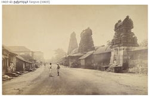
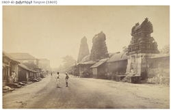

This place was previously called Śiyāli. Indra once fled to this place in fear of the asura called Śūrapadma and did tapas here. There are no references to Thanjavur in the Sangam period Tamil records, though some scholars believe that the city has existed since that time. Kovil Venni, situated 15 miles (24 km) to the east of the city, was the site of the Battle of Venni between the Chola king Karikala and a confederacy of the Cheras and the Pandyas. The Cholas seemed to have faced an invasion of the Kalabhras in the third century CE after which the kingdom faded into obscurity. The region around present day Thanjavur was conquered by the Mutharayars during the sixth century, who ruled it up to 849. The Cholas came to prominence once more through the rise of the Medieval Chola monarch Vijayalaya (841–878 CE) in about 850 CE. Vijayalaya conquered Thanjavur from the Mutharayar king Elango Mutharayar and built a temple dedicated to the Hindu goddess Nisumbhasudani. His son Aditya I (871–901) consolidated their hold over the city. The Rashtrakuta king Krishna II (878–914), a contemporary of the Chola king Parantaka I (907–950), claims to have conquered Thanjavur, but there are no records to support the claim. Gradually, Thanjavur became the most important city in the Chola Empire and remained its capital till the emergence of Gangaikonda Cholapuram in about 1025. During the first decade of the eleventh century, the Chola king Raja Raja Chola I (985–1014) constructed the Brihadeeswarar Temple at Thanjavur. The temple is considered to be one of the best specimens of Tamil architecture. When the Chola Empire began to decline in the 13th century, the Pandyas from the south invaded and captured Thanjavur twice, first between 1218–19 and again in 1230. During the second invasion, the Chola king Rajaraja III (1216–56) was exiled and he sought the help of the Hoysala king Vira Narasimha II (1220–35) to regain Thanjavur. Thanjavur was eventually annexed along with the rest of the Chola kingdom by the Pandya king Maravarman Kulasekara Pandyan I (1268–1308) in 1279 and the Chola kings were forced to accept the suzerainty of the Pandyas. The Pandyas ruled Thanjavur from 1279 to 1311 when their kingdom was raided by the forces of Malik Kafur (1296–1306) and later annexed by the Delhi Sultanate. The Sultanate extended its authority directly over the conquered regions from 1311 to 1335 and then through the semi-independent Ma'bar Sultanate from 1335 to 1378. Starting from the 1350s, the Ma'bar Sultanate was steadily absorbed into the rising Vijayanagar Empire.
 
